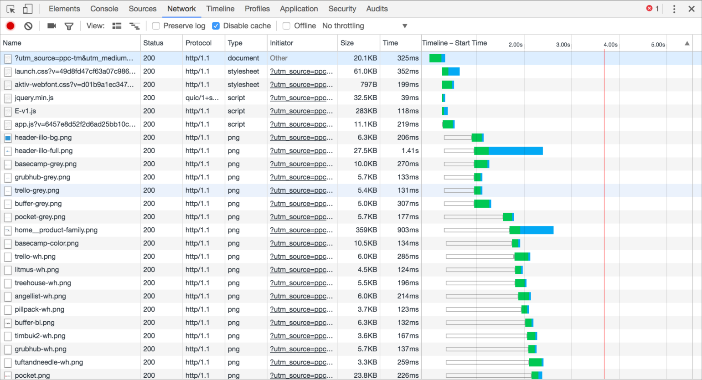
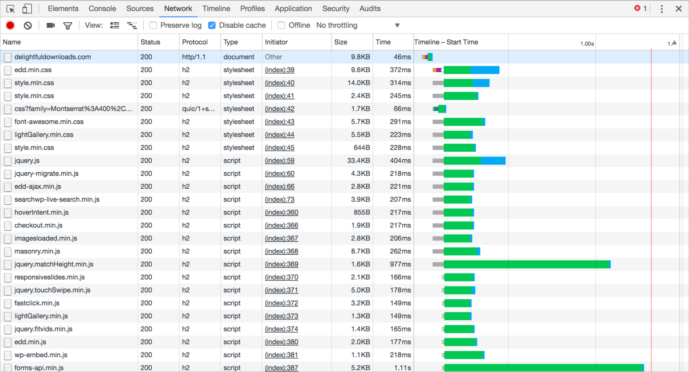

思考路径：
为什么要实现batch call? -> 减少网络中的传输损耗 -> 如何减少的? -> 通过合并HTTP请求 -> 合并HTTP请求是如何减少网络损耗的？
本文将解决这个问题。一起看看单个请求携载大量信息和多个请求携载小量信息对于整个时间的影响。
1. Client发出请求#
1.1 HTTP 1.1#
可以保持长连接，但是每个不同的请求之间，client要向server发一个请求头
请求无法并行执行的，在一个连接里面
假设如果不合并的话需要建立N个连接，那么合并就可以省去(N-1)*RTT的时间，RTT指网络延迟（在传输介质中传输所用的时间，即从报文开始进入网络到它开始离开网络之间的时间）。
1.2 TCP丢包问题#
慢启动，拥塞控制窗口
TCP报文乱序到达，合并后的文件可以允许队首丢包以后在队中补上来，但是分开资源的时候，前一个资源未加载完成后面的资源是不能加载的，会有更严重的队首阻塞问题，丢包率会严重影响Keep alive情况下多个文件的传输速率。
1.3 浏览器线程数限制#
多为2-6个线程，会在每个连接上串行发送若干个请求。TCP连接太多，会给服务器造成很大的压力的。
1.4 DNS缓存问题#
每次请求都需要找DNS缓存，多个请求就需要查找多次，而且缓存有可能被无故清空
2. 服务器处理请求#
每个请求需要使用一个连接，建立一个线程，分配一部分CPU, 对于CPU而言，是种负担，尤其是一般来说建立了连接以后，哪怕发回了请求，这个连接还会保持一段时间才会timeout。这种时候，维持连接是对服务器资源的一种巨大的浪费。
3. HTTP 2.0#
上面描述的所有都是基于HTTP/1.1的一些特性，或者说弊端，有长连接但是无法并行处理请求，TCP的慢启动和拥塞控制，队首阻塞问题都给整个性能带来很多弊端，因此我们有了HTTP2.0来做针对性的改进。很有意思的东西，直接看图：
HTTP/1.1 network的请求图
HTTP/2 network的请求图

就是这么酷炫，HTTP/2多了很多特性来解决HTTP/1.1的很多问题
3.1 Fully multiplexed#
解决了队首阻塞的问题。对于同一个TCP连接，现在可以发送多个请求，接收多个回应了！在HTTP/1.1里面，如果在一个连接里上一个请求发生了丢包，那么后面的所有请求都必须等第一个请求补上包，收到回应以后才能继续执行。而在HTTP/2里面，可以直接并行处理。
3.2 Header Compression#
所有的HTTP request和response都有header，但是header里很可能包含缓存信息，导致他的大小会迅速增大的。但是在一个连接里大部分请求的请求头其实携带的信息都很类似，所以HTTP/2使用了索引表，存储了第一次出现的请求的请求头，然后后面的类似的请求只需要携带这个索引的数字就好了。头部压缩平均减少了30%的头部大小，加快了整体的网络中传输的速度。
这两点是和本文关系最大的，有了这两点，实质上合并HTTP请求的好处在HTTP/2的协议下，已经基本上消失了。合并不合并请求，更多的是看业务上的需求，后端的一些配置。
4. 总结#
It’s a trade-off. 其实最重要的是看你传输什么东西，因为合并HTTP请求实质上是减少了网络延时，但是如果你在服务器上处理的时间远远大于网络延时的时间的时候，那么合并HTTP请求并不会给你带来很多性能上的提升。而且大数据量的传输一定会降低浏览器的cache hit rate,对于缓存的利用率会降低很多。但是对于HTTP请求携带的数据量比较少的情况，合并请求带来的性能提升会是显而易见的。
Reference#
4. Merge parallel htto requests